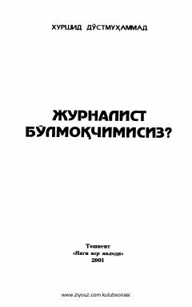

JBJurnalistlik kasbini egallashni istagan yoshlar uchun amaliy qoʻllanma.
Ushbu kitob jurnalist boʻlishni orzu qilgan yoshlar va boshlovchi jurnalistlar uchun moʻljallangan qoʻllanmadir. Unda kasbning oʻziga xos talablari, professional jurnalist maqomiga erishish shartlari va soha sirlari haqida soʻz boradi.